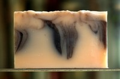

| Levanda ir rožė |  Švelniai ružavas muiliukas su violetiniais intarpais – levandų ir rožių puokštė – gaivus, balansuojantis ir raminantis. Labai moteriškas, tačiau pelnytai mėgstamas ir vyrų |
|---|---|
| Rozmarinas ir levanda | Aktyvuojantis, žvalumo ir energijos suteikiantis muiliukas. Budins ryte, sumažins nuovargį po darbo dienos. |
| Šokoladinis | Dosnus kakavos sviesto kiekis ir jo sinergistinis derinys su kakavos milteliais suteikia šiam muiliukui ypatingų drėkinančių savybių ir šilkinio švelnumo pojūtį. Tai muiliukas padovanosiantis jums tikrą šokoladinės vonios patyrimą. Šildantis, sensualus, šiek tiek stimuliuojantis. |
| Apelsinas ir cinamonas | Apelsino ir cinamono eterinių aliejų derinys turi šildančio poveikio, gerina nuotaiką, ypač niūriomis dienomis, kai trūksta saulės ir šilumos. |